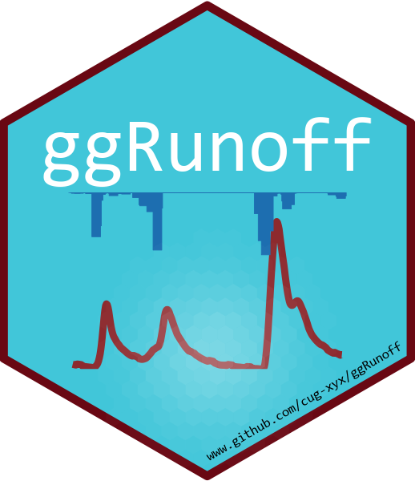
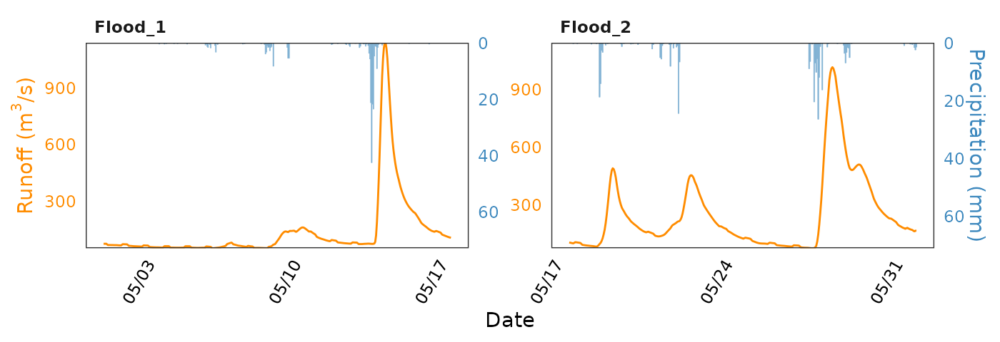

Example 1
Yuxuan Xie
2023-08-05
Example1.Rmd
library(ggplot2)
library(ggRunoff)
set_coef = 15
runoff_data$flood_type = c(rep('Flood_1', 400), rep('Flood_2', 344))
runoff_data |>
ggplot(aes(x=time, Q)) + theme_test() +
geom_rainfallRunoff(
aes(runoff=Q, prcp=prcp, color=flood_type), coef=set_coef,
rainfall.color='#80b1d3', rainfall.fill = '#80b1d3',
color = 'darkorange', linewidth=0.5
) +
scale_y_precipitation(sec.name = 'Precipitation (mm)', coef = set_coef) +
facet_wrap(~flood_type, scales = 'free') +
scale_x_datetime(date_labels = "%m/%d") +
theme(
legend.position = c(0, 1),
legend.justification = c(0, 1),
legend.background = element_blank(),
legend.key = element_blank(),
axis.ticks = element_blank(),
axis.text.y.left = element_text(color='darkorange'),
axis.text.y.right = element_text(color='#3e89be'),
axis.text = element_text(color = 'black'),
axis.text.x = element_text(angle = 60, hjust = 1),
axis.title.y.left = element_text(color = 'darkorange'),
axis.title.y.right =element_text(color = '#3e89be'),
strip.background = element_blank(),
strip.text = element_text(face = 'bold', hjust = 0)
) +
labs(x = 'Date', y = expression('Runoff (m'^'3'*'/s)'))